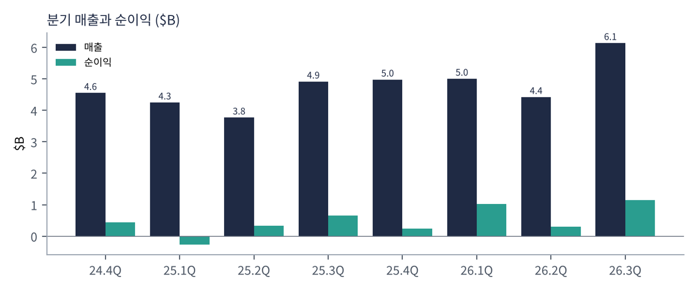
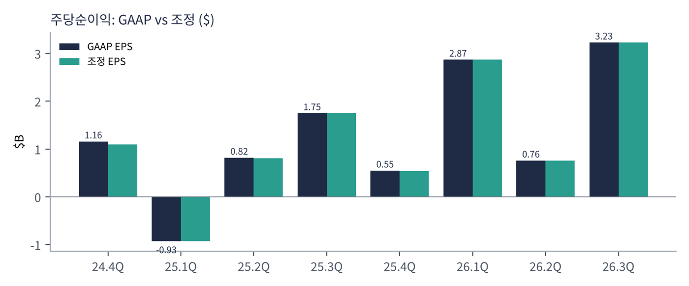
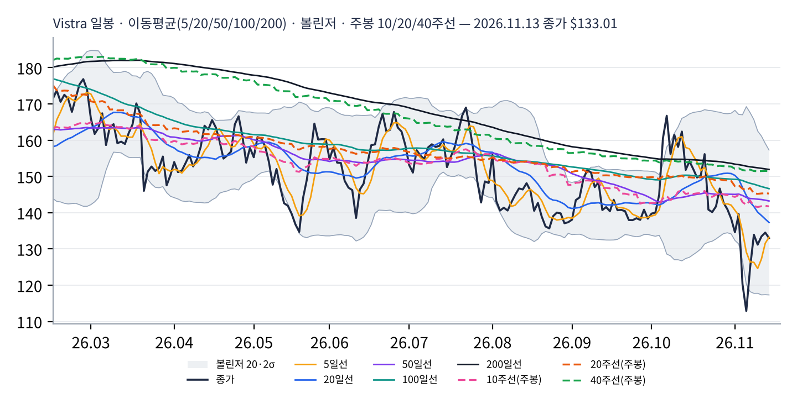
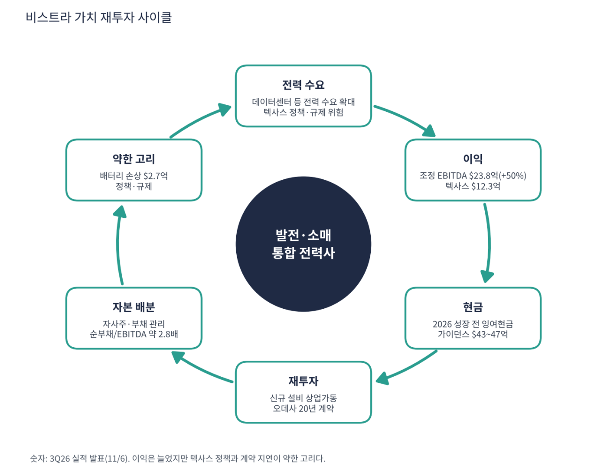

비스트라는 미국 텍사스(ERCOT)와 동부(PJM 등) 지역에서 발전소를 운영하고 소매 전력도 파는 통합 전력사다. 가스·석탄·원전·태양광·배터리를 함께 갖고 있다. 3분기 조정 EBITDA가 +50% 늘고 2026·2027 가이던스를 올려 잡았지만, 주가는 200일선 아래에 있고 텍사스 정책과 데이터센터 규제 위험이 남아 있는 회사다.
| 항목 | 내용 |
|---|---|
| 종목 | Vistra Corp. (VST) · NYSE · 전력 발전·소매 · 본사 미국 텍사스주 어빙 |
| 밸류에이션 | PER 18.0배(GAAP TTM) · P/S 2.21배 (11/13 종가 $133.01) |
| 최근 분기(3Q26) | 매출 약 $63.5억(+27.7%, 스캐너 $61.4억), 순이익 $11.4억, EPS $3.23 |
| 조정 EBITDA(3Q) | 계속 사업 조정 EBITDA $23.78억(+50%): 텍사스 $12.27억, 동부 $9.79억, 소매 $0.98억 |
| 현금·부채 | 현금 약 $28억, 총차입금 약 $211억, TTM EBITDA 약 $74억, TTM 잉여현금 약 $26억(스캐너) |
| 가이던스 | 2026 조정 EBITDA $71~75억(좁힘), 성장 투자 전 잉여현금 $43~47억 · 2027 EBITDA $77~85억, 같은 잉여현금 $43~51억 |
| 다음 실적 | 4Q26 실적: 2027년 3월 3일 예정(트레이딩뷰) |
| 직책 | 인물 | 역할·특징 |
|---|---|---|
| CEO | 짐 버크 | 발전·소매 통합 모델을 이끌며 장기 계약과 설비 확장을 추진 |
| CFO | 크리스 몰도반 | 가이던스 상향과 부채 관리·자본 배분 설명 |
경영 스타일: '발전 설비를 늘리고 장기 계약으로 현금흐름을 고정한다'. 3Q에는 신규 설비(풀라스키, 디어크릭)가 상업가동에 들어갔고, 오데사 지역에서 신규 고객과 20년 계약을 맺었다. 같은 분기에 배터리(모스랜딩 350MW) 관련 손상 $2.69억을 반영했다.
가스·원전·태양광·배터리를 섞어 가격 변동에 대응하고, 소매 사업으로 수요를 확보한다. 계속 사업 조정 EBITDA의 절반 이상이 텍사스에서 나온다.
회사는 2030년 주당 잉여현금 약 $24를 전망한다(회사 전망). 데이터센터 장기 계약과 인수로 설비를 늘리는 방향이다.
| 분기 | 매출 | 순이익 | EPS | 조정 EPS | 특이 사항 |
|---|---|---|---|---|---|
| 2024.4Q | $45.5억 | $4.4억 | 1.16 | 1.10 | |
| 2025.1Q | $42.5억 | $-2.7억 | -0.93 | -0.93 | 순손실(원인 미확인) |
| 2025.2Q | $37.7억 | $3.3억 | 0.82 | 0.81 | |
| 2025.3Q | $49.2억 | $6.5억 | 1.75 | 1.75 | |
| 2025.4Q | $49.8억 | $2.3억 | 0.55 | 0.54 | |
| 2026.1Q | $50.1억 | $10.3억 | 2.87 | 2.87 | |
| 2026.2Q | $44.2억 | $3.0억 | 0.76 | 0.76 | |
| 2026.3Q | $61.4억 | $11.4억 | 3.23 | 3.23 | 미실현 헤지 이익 $5.59억 포함 |


조정 EPS는 트레이딩뷰 'Reported' 값이다. 비스트라는 조정 EPS를 따로 발표하지 않고(조정 EBITDA를 발표) 이 값은 GAAP과 거의 같아 열 간 차이가 작다.
흐름 요약: 분기 매출은 $38~61억, 순이익은 -$2.7억~+$11.4억으로 크게 흔들린다. 3Q26 순이익 $11.4억에는 미실현 헤지 이익 $5.59억이 들어 있어 절반 가까이가 평가이익이다(내 계산). 스캐너 매출($61.4억)은 회사 발표($63.5억)와 달라 표에는 스캐너 값을 일관되게 썼다. 영업이익과 분기 설비투자는 구하지 못해 표에서 뺐다.
| 구분 | 3Q26 조정 EBITDA | 비고 |
|---|---|---|
| 텍사스 | $12.27억 | 계속 사업의 약 52% |
| 동부 | $9.79억 | |
| 소매 | $0.98억 | |
| 합계(계속 사업) | $23.78억(+50%) | 나머지·조정 합계 $0.74억(내 계산) |
텍사스가 이익의 절반이고, 정책 위험도 텍사스에 몰려 있다. 텍사스 데이터센터 관련 규제와 모라토리엄 논의가 위험 요인이다.
비스트라의 방향은 '신규 설비와 장기 계약으로 잉여현금을 키우고, 일부를 자사주로 돌려주는 것'이다.
| 축 | 최근 움직임 |
|---|---|
| 신규 설비 | 풀라스키·디어크릭 상업가동, 오데사 20년 계약 |
| 인수·재무 | 코젠트릭스 종결과 우선주 상환 후 순부채/EBITDA 약 2.8배(회사 안내) |
| 가이던스 | 2026 EBITDA $71~75억, 2027 $77~85억 |
| 장기 전망 | 2030 주당 잉여현금 약 $24(회사 전망) |

| 이동평균 | 값 | 종가 대비 | 해석 |
|---|---|---|---|
| 5일선 | $133.21 | -0.2% | 실적 후 반등 |
| 20일선 | $137.29 | -3.1% | 하향 |
| 50일선 | $143.22 | -7.1% | 하향 |
| 100일선 | $146.62 | -9.3% | 하향 |
| 200일선 | $151.92 | -12.4% | 현재가가 아래 |
주봉 흐름: 2025년 11월 고점 $189(11/20) → 12~3월 $145~180 → 5월 저점 $133 → 7월 $163 → 10/5 주 고점 $168.7 → 11/2 주 저가 $110.9 → 실적 발표 주(11/9) 종가 $133.
| 규칙 | 기준 | 현재 값 | 신호 |
|---|---|---|---|
| 장기 추세 필터 | 종가 vs 200일선 | $133.01 < $151.92 | 매도 |
| 중장기 교차 | 50일선 vs 200일선 | $143.22 < $151.92 | 매도 |
| 단기 교차 | 20일선 vs 50일선 | $137.29 < $143.22 | 매도 |
| 돈키언 채널 | 55일 고가 $168.75 / 저가 $110.89 | 중간값 $139.82 아래 | 매도 |
| 1개월 모멘텀 | 21거래일 수익률 | -13.7% (기준 $154.17) | 매도 |
| 3개월 모멘텀 | 63거래일 수익률 | -9.0% (기준 $146.11) | 매도 |
| 6개월 모멘텀 | 126거래일 수익률 | -4.8% (기준 $139.68) | 매도 |
| 12개월 모멘텀 | 252거래일 수익률 | -25.4% (기준 $178.27) | 매도 |
| 종합 (8개 평균) | -1.00 | 강한 매도 |
해석: 8개 신호가 모두 매도다(-1.00, 강한 매도). 11/5 저점 $110.9에서 반등했지만 20일선($137.3)도 아직 못 넘었다. 14일 ATR $7.99 (6.0%).
| 가격 | 무엇이 바뀌나 | 의미 |
|---|---|---|
| $139.7~139.8 상향 돌파 | 6개월 모멘텀·돈키언 중간값 | 매도 → 매수 2개 전환 |
| $146.1 상향 돌파 | 3개월 모멘텀 | 추가 1개 전환 |
| $151.9 상향 돌파 | 200일선 | 장기 추세 필터 전환 |
| 구분 | 가격대 | 근거 |
|---|---|---|
| 저항 1 | $137 ~ 143 | 20일선·50일선 |
| 저항 2 | $152 | 200일선 |
| 지지 1 | $125 | 11/9 주 저가 |
| 지지 2 | $110.9 | 11/5 55일 저점 |
모든 신호가 매도인 하락 추세라 추세 추종 기준으로는 매수 구간이 아니다. 저점 반등을 노리는 역추세 접근이라면 $122~132에서 계획 비중의 30%만 진입하고 종가 $109(저점 $110.9 아래) 이탈 시 손절한다. 1차 목표 $143(50일선), 2차 $152(200일선, 내 가정). 20일선($137) 회복 확인 뒤 비중을 늘리는 쪽이 더 안전하다.
| 악재 요인 | 내용 | 강도 |
|---|---|---|
| 텍사스 정책 | 데이터센터 규제·모라토리엄 논의, 이익의 약 절반이 텍사스 | 높음 |
| 차입·인수 | 순부채/EBITDA 약 2.8배(안내), 인수 통합 | 중간 |
| 자산 손상 | 모스랜딩 배터리 $2.7억 손상 | 중간 |
| 헤지 평가손익 | GAAP EPS 변동, 3Q 순이익의 약 절반 | 참고 |
| 티커 | 회사 | PER(TTM) | PEG | P/S | EPS 성장(YoY) |
|---|---|---|---|---|---|
| VST | 비스트라 | 18.0배 | – | 2.21배 | +165% |
| CEG | 컨스텔레이션 | 22.2배 | 0.68 | 2.98배 | +33% |
| NRG | NRG 에너지 | 17.1배 | – | 0.59배 | -17% |
| TLN | 탈렌 에너지 | 적자 | – | 3.80배 | -225% |
CEG의 PER·PEG·성장률은 조정 EPS 기준이고 나머지는 트레이딩뷰 GAAP TTM이다. VST는 기저 효과로 PEG를 산출하지 않았다.
비교 결론: PER 18배는 CEG(22배)보다 낮고 NRG(17배)와 비슷하다. EV/EBITDA 약 8.6배는 가이던스가 맞으면 2027년 기준 7.8배다.
VST는 차입 부담이 큰 인프라형 회사다. 현금 약 $28억, 총차입금 약 $211억으로 순부채 약 $183억이고 TTM EBITDA 대비 약 2.5배다(회사는 인수 종결·우선주 상환 반영 후 약 2.8배로 안내).
| 지표 | 값 | 계산·출처 | 해석 |
|---|---|---|---|
| 현금 | 약 $28억 | 스캐너 | 유동성 한도 등은 미확인 |
| 총차입금 | 약 $211억 | 스캐너 | 순부채 약 $183억(내 계산) |
| TTM EBITDA | 약 $74억 | 스캐너 | 순부채/EBITDA 약 2.5배 |
| TTM 잉여현금흐름 | 약 $26억 | 스캐너 | – |
| 기준 | 값 | 비고 |
|---|---|---|
| P/S (TTM) | 2.21배 | TTM 매출 약 $205.5억(내 계산) |
| P/FCF (TTM) | 약 17배 | 잉여현금 $26억 |
| P/성장 전 잉여현금(2026 가이던스 중간 $45억) | 약 10배 | 가이던스 중간값(내 계산) |
| 동종 | CEG 3.0, NRG 0.6, 탈렌 3.8 | 11/13 스캐너 |
해석: 가이던스 기준 잉여현금 수익률이 약 10%다. 다만 '성장 투자 전' 수치라 투자 지출을 빼면 낮아진다. 스트레스 가정(EBITDA $74억·순부채 $183억·주식 3.39억 주 고정, 내 가정): EV/EBITDA 7배면 주가 약 $99(-26%), 8배면 $121(-9%), 10배면 $164(+24%)다.
| 지표 | 값 | 판정 |
|---|---|---|
| PER (GAAP TTM) | 18.0배 | TTM EPS $7.41 |
| PER (조정 TTM) | 18.0배 | 최근 4분기 Reported EPS 합 $7.40 (내 계산) |
| EV / EBITDA (TTM) | 약 8.6배 | EV(차입금 $211억 − 현금 $28억 반영) ÷ $74억 |
| EV / EBITDA (2026 가이던스 중간 $73억) | 약 8.7배 | 내 계산 |
| EV / EBITDA (2027 가이던스 중간 $81억) | 약 7.8배 | 내 계산 |
| 방식 | PER | EPS 성장률 | PEG | 판정 |
|---|---|---|---|---|
| 트레이딩뷰 (GAAP TTM) | 18.0배 | +164.6% | – | 트레이딩뷰는 PEG를 주지 않음 |
| 조정(Reported) TTM $7.40 ÷ 직전 TTM $2.73 | 18.0배 | +171% | 산출 불가 | 기저 효과로 의미 없음(내 계산) |
| 미실현 헤지 이익 제외 추정(3Q EPS 약 $2.04, 세율 25% 가정) | 약 21.4배 | 약 +127% | 약 0.17 | 참고용 · 내 가정 |
| 직전 TTM 구성 | – | – | – | 4Q24 1.10 + 1Q25 -0.93 + 2Q25 0.81 + 3Q25 1.75 |
판정: PEG는 산출하지 않는다. 직전 4분기 EPS가 낮아(1Q25 손실) 성장률이 +170%로 부풀었고, 3Q26 순이익의 절반 가까이가 미실현 헤지 이익이다. 가치 판단은 EV/EBITDA 약 8.6배와 가이던스 기준 잉여현금 수익률 약 10%로 한다. 2027 가이던스 중간값이 맞다면 EV/EBITDA는 7.8배다.

사이클은 전력 수요 → 이익 → 현금 → 신규 설비 → 자본 배분이다. 텍사스 정책과 배터리 손상이 약한 고리다.
| 고리 | 현재 숫자 | 고리 강도 | 약해지는 신호 |
|---|---|---|---|
| ① 전력 수요 | 데이터센터 계약(오데사 20년) | 강함 | 계약 지연, 규제 |
| ② 이익 | 조정 EBITDA $23.8억(+50%) | 강함 | 가격 하락 |
| ③ 현금 | 2026 성장 전 잉여현금 $43~47억 | 강함 | 가이던스 하향 |
| ④ 재투자 | 신규 설비 가동, 배터리 손상 $2.7억 | 진행 | 공사 지연·손상 |
| ⑤ 부채 | 순부채/EBITDA 약 2.8배(안내) | 부담 | 금리, 인수 차입 |
| ⑥ 정책 | 텍사스 규제·모라토리엄 논의 | 위험 | 입법·규제 확정 |
구조: 강한 고리는 ①②③, 약한 고리는 ④⑤⑥이다.